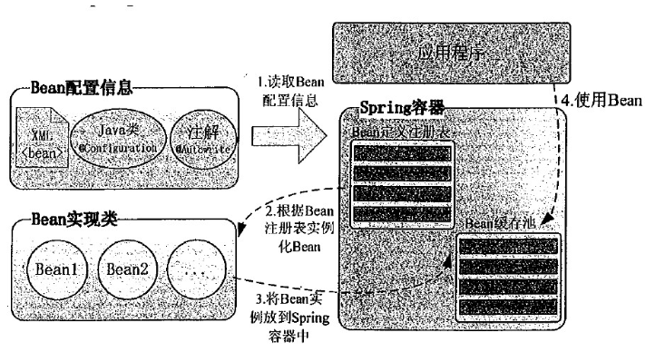

关于spring
spring核心技术：
Spring的官方网站
PPT参考学习：
一、spring是什么？
简单描述为：
spring是一个开源框架，spring为简化企业级应用开发而生，使用spring可以使以前简单的Javabean实现以前以前只有EJB才能实现的功能。spring是一个 IOC(DI) 和 AOP 容器框架。
具体描述为:
①轻量级：Spring 是非侵入性的 - 基于 Spring 开发的应用中的对象可以不依赖于 Spring 的 API
②依赖注入(DI --- dependency injection、IOC)
③面向切面编程(AOP --- aspect oriented programming)
④容器: Spring 是一个容器, 因为它包含并且管理应用对象的生命周期
⑤框架: Spring 实现了使用简单的组件配置组合成一个复杂的应用. 在 Spring 中可以使用 XML 和 Java 注解组合这些对象
⑥一站式：在 IOC 和 AOP 的基础上可以整合各种企业应用的开源框架和优秀的第三方类库 （实际上 Spring 自身也提供了展现层的 SpringMVC 和 持久层的 Spring JDBC）
Spring是一个开源的框架，现在的Spring框架构成了一个体系平台，通过Spring的官方网站http://www.springsource.org可以了解到，围绕着Spring框架本身，还有许多其他优秀的项目:
SpringFramework(Core)：核心项目
Spring Web Flow：工作流项目
Spring Security：安全项目
Spring Batch：批量数据处理项目
Spring Android：Android系统支持项目
Spring Social：社交项目
二、spring 模块
spring分为七大模块，分别为：
核心容器（Spring Core） | 核心容器提供Spring框架的基本功能。Spring以bean的方式组织和管理Java应用中的各个组件及其关系。Spring使用BeanFactory来产生和管理Bean，它是工厂模式的实现。BeanFactory使用控制反转(IoC)模式将应用的配置和依赖性规范与实际的应用程序代码分开。 |
应用上下文（Spring Context） | Spring上下文是一个配置文件，向Spring框架提供上下文信息。Spring上下文包括企业服务，如JNDI、EJB、电子邮件、国际化、校验和调度功能。 |
Spring面向切面编程（Spring AOP） | 通过配置管理特性，Spring AOP 模块直接将面向方面的编程功能集成到了 Spring框架中。所以，可以很容易地使 Spring框架管理的任何对象支持 AOP。Spring AOP 模块为基于 Spring 的应用程序中的对象提供了事务管理服务。通过使用 Spring AOP，不用依赖 EJB 组件，就可以将声明性事务管理集成到应用程序中。 |
JDBC和DAO模块（Spring DAO） | JDBC、DAO的抽象层提供了有意义的异常层次结构，可用该结构来管理异常处理，和不同数据库供应商所抛出的错误信息。异常层次结构简化了错误处理，并且极大的降低了需要编写的代码数量，比如打开和关闭链接。 |
对象实体映射（Spring ORM） | Spring框架插入了若干个ORM框架，从而提供了ORM对象的关系工具，其中包括了Hibernate、JDO和 IBatis SQL Map等，所有这些都遵从Spring的通用事物和DAO异常层次结构。 |
Web模块（Spring Web） | Web上下文模块建立在应用程序上下文模块之上，为基于web的应用程序提供了上下文。所以Spring框架支持与Struts集成，web模块还简化了处理多部分请求以及将请求参数绑定到域对象的工作。 |
MVC模块（Spring Web MVC） | MVC框架是一个全功能的构建Web应用程序的MVC实现。通过策略接口，MVC框架变成为高度可配置的。MVC容纳了大量视图技术，其中包括JSP、POI等，模型来有JavaBean来构成，存放于m当中，而视图是一个街口，负责实现模型，控制器表示逻辑代码，由c的事情。Spring框架的功能可以用在任何J2EE服务器当中，大多数功能也适用于不受管理的环境。Spring的核心要点就是支持不绑定到特定J2EE服务的可重用业务和数据的访问的对象，毫无疑问这样的对象可以在不同的J2EE环境，独立应用程序和测试环境之间重用。 |
三、安装 SPRING TOOL SUITE与搭建spring开发环境
① SPRING TOOL SUITE 是一个 Eclipse 插件，利用该插件可以更方便的在 Eclipse 平台上开发基于 Spring 的应用。
② 搭建spring开发环境
jar包本机路径：
E:\web项目常用jar包\spring-framework-5.0.4.RELEASE\spring-framework-5.0.4.RELEASE-dist\spring-framework-5.0.4.RELEASE\libs
（将目录下的所有jar包引入项目的 lIBs目录下面并 build path）
四、spring hello Word
1.新建一个动态web工程，新建lib文件夹，导入jar包
2.新建一个Helloworld类，定义一个私有的变量并提供set方法，提供一个公共访问方法

package com.ants.spring.beans;
public class HelloWorld {
private String name;
public HelloWorld() {
System.out.println("HelloWord类被实例化，对象被创建");
}
public void setName(String name) {
this.name = name;
}
public void say() {
System.out.println("hello," + name);
}
}
3.如果安装Spring IDE插件，在new->other->spring->spring bean configuration file 新建applicationContext.xml配置文件
如果eclipse没有安装Spring插件，可点击Spring IDE安装链接安装插件；还可以从文档中把开头部分粘贴过来 xxx/spring-framework-4.2.0.RELEASE/docs/spring-framework-reference/html/beans.html
<?xml version="1.0" encoding="UTF-8"?>
xsi:schemaLocation="http://www.springframework.org/schema/beanshttp://www.springframework.org/schema/beans/spring-beans.xsd">
<bean id="helloWorld" class="com.ants.spring.beans.HelloWorld">
<property name="name" value="world"></property>
</bean>
</beans>
*：常见错误： applicationContext.xml要放在src路径下（java.io.FileNotFoundException:）
4.编写测试类Test
package com.ants.spring.beans;
import org.springframework.context.ApplicationContext;
import org.springframework.context.support.ClassPathXmlApplicationContext;
public class Test {
public static void main(String[] args) {
ApplicationContext ctx = new ClassPathXmlApplicationContext("applicationContext.xml");
HelloWorld helloWorld = (HelloWorld) ctx.getBean("helloWorld");
helloWorld.say();
System.out.println(helloWorld);
}
}
*：存在问题： ClassPathXmlApplicationContext与FileSystemXmlApplicationContext的区别（下面有介绍）
5.运行程序，控制台打印出以下内容，HelloWorld创建成功
HelloWord类被实例化，对象被创建
hello,world
com.ants.spring.beans.HelloWorld@b1c705
四、Spring_IOC&DI概述
ioc基本概念：
①控制反转IoC(Inversion of Control)，是一种设计思想，DI(依赖注入)是实现IoC的一种方法，也有人认为DI只是IoC的另一种说法。没有IoC的程序中我们使用面向对象编程对象的创建与对象间的依赖关系完全硬编码在程序中，对象的创建由程序自己控制，控制反转后将对象的创建转移给第三方。
② IoC是Spring框架的核心内容，使用多种方式完美的实现了IoC，可以使用XML配置，也可以使用注解，新版本的Spring也可以零配置实现IoC。
③ Spring容器在初始化时先读取配置文件，根据配置文件或元数据创建与组织对象存入容器中，程序使用时再从Ioc容器中取出需要的对象。
DI介绍：
DI(Dependency Injection) — IOC 的另一种表述方式：即组件以一些预先定义好的方式(例如: setter 方法)接受来自如容器的资源注入. 相对于 IOC 而言，这种表述更直接
五、Spring_配置 Bean （IOC基础）
（一）基本概念：
在Spring中，所有管理的对象都是JavaBean对象，而BeanFactory和ApplicationContext就是spring框架的两个IOC容器，现在一般使用ApplicationnContext，其不但包含了BeanFactory的作用，同时还进行更多的扩展。
Bean配置信息定义了Bean的实现及依赖关系，Spring容器根据各种形式的Bean配置信息在容器内部建立Bean定义注册表，然后根据注册表加载、实例化Bean，并建立Bean和Bean的依赖关系，最后将这些准备就绪的Bean放到Bean缓存池中，以供外层的应用程序进行调用。

ApplicationContext 的主要实现类：
①ClassPathXmlApplicationContext：从类路径下加载配置文件。
ApplicationContext context = new ClassPathXmlApplicationContext(new String[]{“spring配置文件路径"});
如果只有一个spring配置文件也可以直接传递一个string参数，不需要使用数组。
②FileSystemXmlApplicationContext: 从文件系统（相对路径）中加载配置文件。
③ConfigurableApplicationContext：扩展于 ApplicationContext，新增加两个主要方法：refresh() 和 close()， 让 ApplicationContext 具有启动、刷新和关闭上下文的能力
番外：
绝对路径：是从盘符开始的路径，形如
C:\windows\system32\cmd.exe
相对路径：是从当前路径开始的路径，假如当前路径为C:\windows
要描述上述路径，只需输入
system32\cmd.exe
实际上，严格的相对路径写法应为
.\system32\cmd.exe
其中，.表示当前路径，在通常情况下可以省略，只有在特殊的情况下不能省略。
假如当前路径为c:\program files
要调用上述命令，则需要输入
..\windows\system32\cmd.exe
其中，..为父目录。
当前路径如果为c:\program files\common files
则需要输入
..\..\windows\system32\cmd.exe
另外，还有一种不包含盘符的特殊绝对路径，形如
\windows\system32\cmd.exe
无论当前路径是什么，会自动地从当前盘的根目录开始查找指定的程序。
ApplicationContext 在初始化上下文时就实例化所有单例的 Bean。
WebApplicationContext：是专门为 WEB 应用而准备的，它允许从相对于 WEB 根目录的路径中完成初始化工作
（二）bean配置有三种方法：
- 基于xml配置Bean (一般情况下，Spring IOC容器中的一个Bean即对应配置文件中的一个<bean>,这种镜像对应关系应该容易理解。其中id为这个Bean的名称，通过容器的getBean("foo")即可获取对应的Bean，在容器中起到定位查找的作用，是外部程序和Spring IOC容器进行交互的桥梁。class属性指定了Bean对应的实现类。 )
- 使用注解定义Bean
- 基于java类提供Bean定义信息
（三）Spring_属性配置细节
（其中包括对：使用字面值注入、特殊字符、引用其他bean、内部bean、注入参数详解【null值和级联属性】、集合属性的自动赋值、使用 utility scheme 定义集合（定义独立的 List Bean ，被其他 Bean 所共享）、使用p命名空间）
（四）spring 自动装配（开发时基本不用）
（五）
IOC容器中的Bean之前存在两种关系：继承和依赖。

（六）Bean的作用域
singleton | 单例模式，Spring IoC容器中只会存在一个共享的Bean实例，无论有多少个Bean引用它，始终指向同一对象。Singleton作用域是Spring中的缺省作用域，也可以显示的将Bean定义为singleton模式，配置为：
|
prototype | 原型模式，每次通过Spring容器获取prototype定义的bean时，容器都将创建一个新的Bean实例，每个Bean实例都有自己的属性和状态，而singleton全局只有一个对象。根据经验，对有状态的bean使用prototype作用域，而对无状态的bean使用singleton作用域。 |
request | 在一次Http请求中，容器会返回该Bean的同一实例。而对不同的Http请求则会产生新的Bean，而且该bean仅在当前Http Request内有效。
|
session | 在一次Http Session中，容器会返回该Bean的同一实例。而对不同的Session请求则会创建新的实例，该bean实例仅在当前Session内有效。
|
globalsession | 在一个全局的Http Session中，容器会返回该Bean的同一个实例，仅在使用portlet context时有效。 |
其中比较常用的是singleton和prototype两种作用域。对于singleton作用域的Bean，每次请求该Bean都将获得相同的实例。容器负责跟踪Bean实例的状态，负责维护Bean实例的生命周期行为；如果一个Bean被设置成prototype作用域，程序每次请求该id的Bean，Spring都会新建一个Bean实例，然后返回给程序。在这种情况下，Spring容器仅仅使用new 关键字创建Bean实例，一旦创建成功，容器不在跟踪实例，也不会维护Bean实例的状态。
如果不指定Bean的作用域，Spring默认使用singleton作用域。Java在创建Java实例时，需要进行内存申请；销毁实例时，需要完成垃圾回收，这些工作都会导致系统开销的增加。因此，prototype作用域Bean的创建、销毁代价比较大。而singleton作用域的Bean实例一旦创建成功，可以重复使用。因此，除非必要，否则尽量避免将Bean被设置成prototype作用域。
（七）使用外部属性文件
（八）Spring_SpEL
（九）spring管理bean的生命周期
（十）通过静态工厂的方法配置bean（;了解）
（十一）Spring_通过 FactoryBean 配置 Bean（了解）
*：以上（三）至（十二）介绍了基于xml配置bean
（十二）spring通过注解配置bean
（十三）泛型依赖注入
这是spring4.0以来引入的新特性
泛型依赖注入就是允许我们在使用spring进行依赖注入的同时，利用泛型的优点对代码进行精简，将可重复使用的代码全部放到一个类之中，方便以后的维护和修改。同时在不增加代码的情况下增加代码的复用性。
六、Spring AOP基础
（一）aop--几种不同的使用方式（依赖jar包：aspectjrt-1.7.4.jar，aspectjweaver-1.7.4.jar（可能因为版本原因出错））
1、基于代理的AOP
2、纯简单Java对象切面
3、@Aspect注解形式的
4、注入形式的Aspcet切面
（二）前置通知&后置通知&返回通知&异常通知&环绕通知
（三）切面优先级和重用切点表达式
七、spring与数据库
（一）使用 JdbcTemplate和JdbcDaoSupport和NamedParameterJdbcTemplate
（二）Spring NamedParameterJdbcTemplate 详解
八、spring事务管理
事务是一系列的动作，它们综合在一起才是一个完整的工作单元，这些动作必须全部完成，如果有一个失败的话，那么事务就会回滚到最开始的状态，仿佛什么都没发生过一样。
在企业级应用程序开发中，事务管理必不可少的技术，用来确保数据的完整性和一致性。
九、在 WEB 应用中使用 Spring 的基本思路